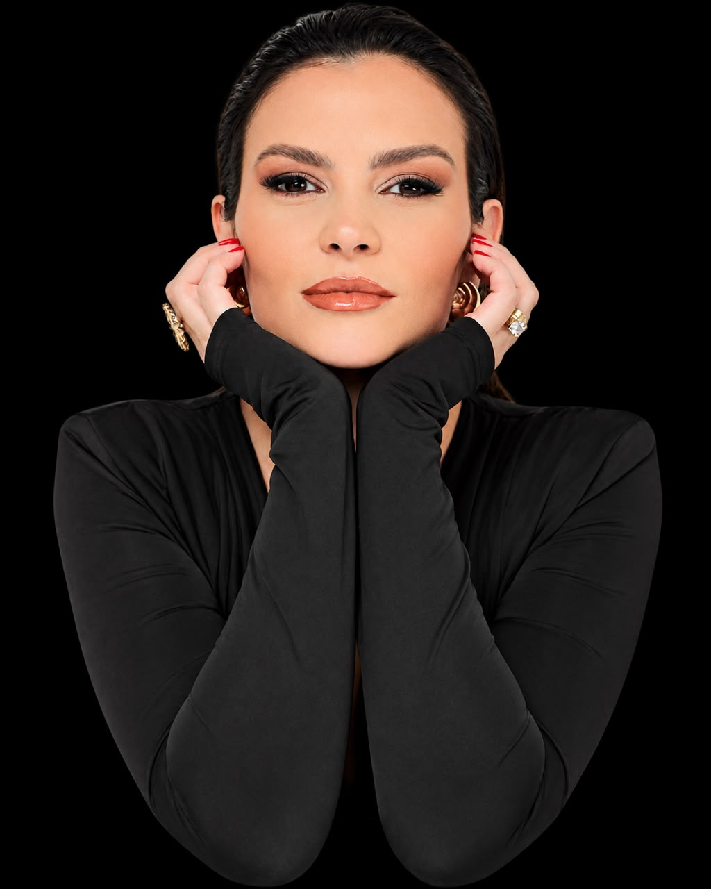
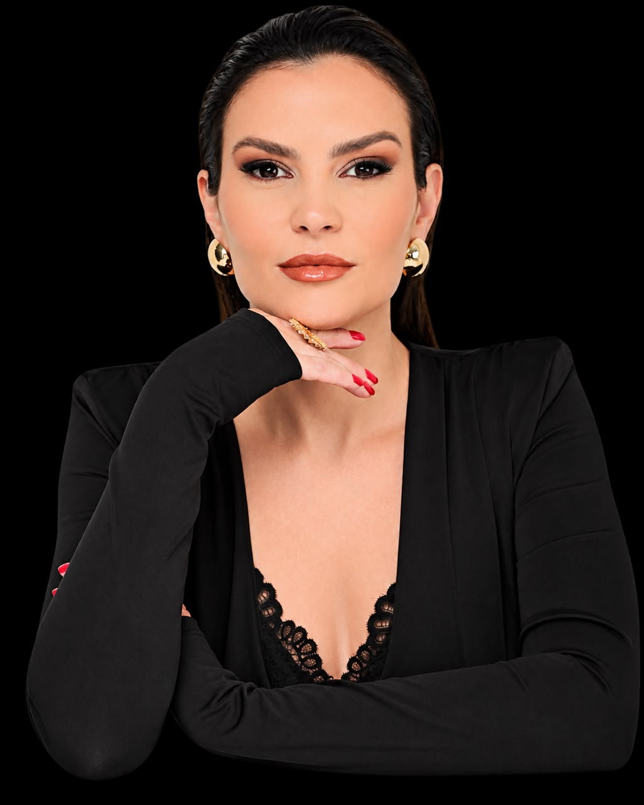
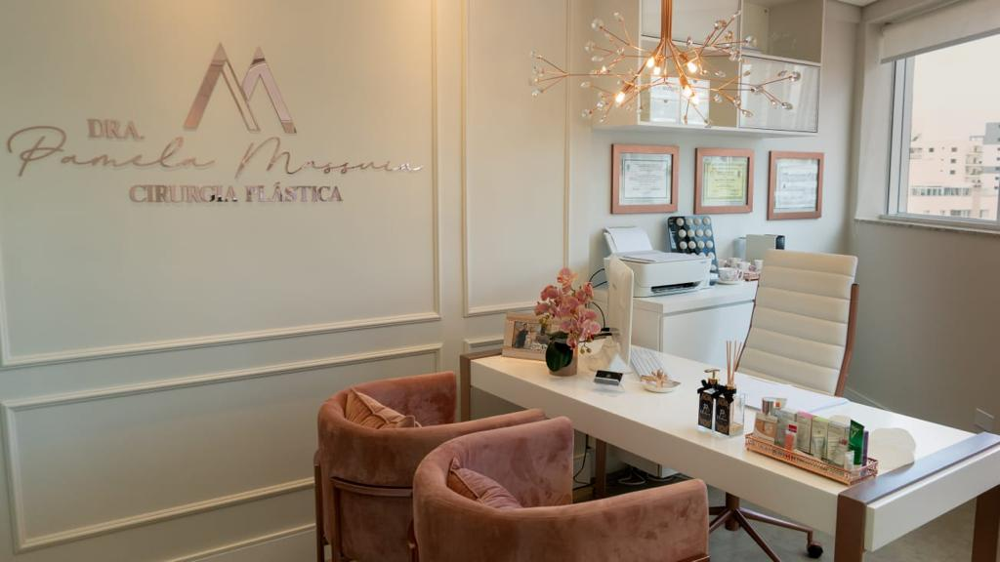
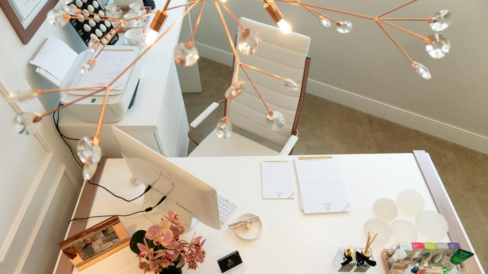
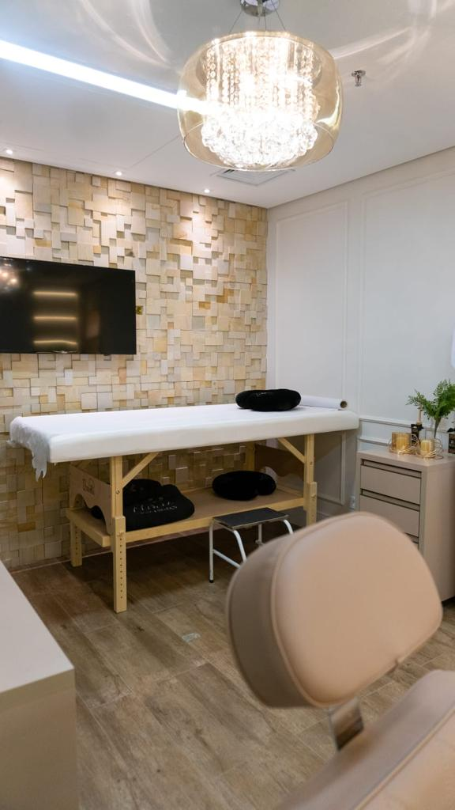
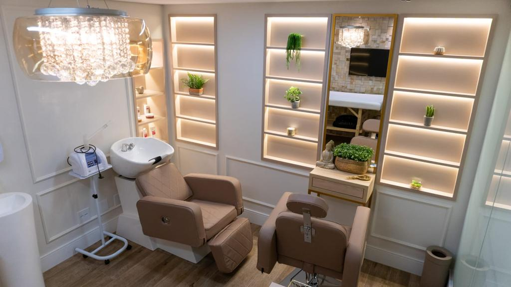
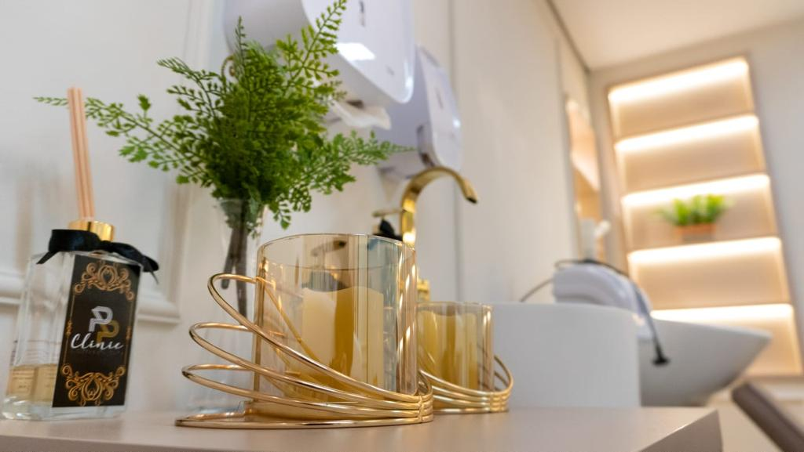
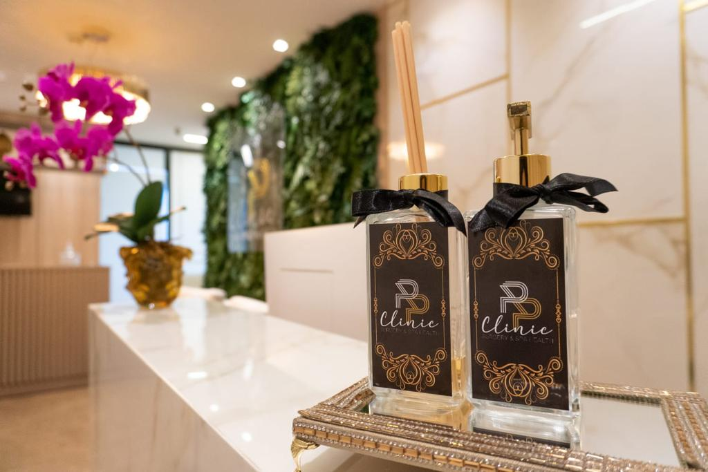
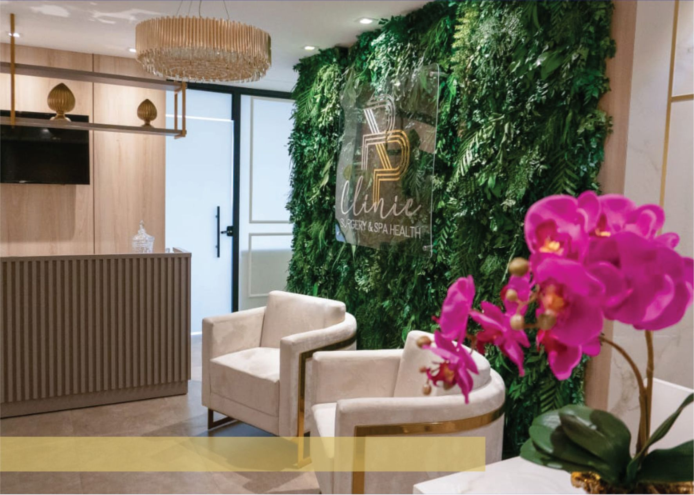

Cirurgiã plástica
CRM 135837/SP · RQE 72310
Cirurgiã plástica número 1 das empresárias
Falar no WhatsAppToque em um procedimento para saber mais.

A Dra. Pamela Massuia é cirurgiã plástica, membro especialista da Sociedade Brasileira de Cirurgia Plástica, e atende em Santana, São Paulo. A consulta parte do que te incomoda hoje e do que é possível para o seu caso.
Mais de 3 mil sonhos realizados
Falar no WhatsApp“Escolhi a Dra. Pamela pelo carinho e atenção que ela teve ao responder minhas dúvidas desde a primeira consulta. Na consulta, expliquei a ela quais eram as minhas expectativas. Ela me ouviu atentamente em seguida, pegou, apalpou (rs), me explicou todas as possibilidades, pacientemente. Não me fez promessas mirabolantes e foi muito transparente e segura. Essa foi a 1ª cirurgia que fiz na vida!! Sempre tive muito medo de cirurgias (qualquer uma) e me imaginar em uma de silicone, com mastopexia !! Já era uma ideia boa. A confiança foi tanta com a Dra. Pamela, que fiz Lipoescultura também!”
Vanessa Bruno - SP
Mastopexia em L e Lipoescultura
"A Dra. Pamela é uma cirurgiã extremamente competente, atua de forma muito esclarecedora, com a confiança e credibilidade que o paciente precisa. Não troco por nada! Indico para todos que precisam."
Viviane Bezerra de Oliveira
Abdominoplastia
"O que falar né. Fiz minha cirurgia com a Dra. Pamela Massuia, indicada por uma colega que colocou silicone. Eu havia desejado essa cirurgia a 30 anos. Se eu tivesse encontrado a Dra. Pamela nesse tempo teria realizado este sonho antes com certeza. Médica atenciosa ela e toda a equipe dela... sua secretária Renata com toda delicadeza e atenção, a anestesista também todo o cuidado do mundo. A cirurgia foi num hospital maravilhoso. Experiência única e maravilhosa. Foi um divisor de águas..."
Denise Mercês - SP
Mastopexia em L







Av. Água Fria, 467 — 7º andar, Sala 74
Santana, São Paulo — CEP 02333-000
Segunda a sexta, das 9h às 18h
Conteúdo informativo. Não substitui a avaliação presencial e não representa promessa de resultado.
Falar no WhatsApp